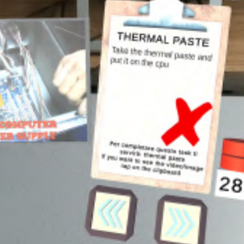
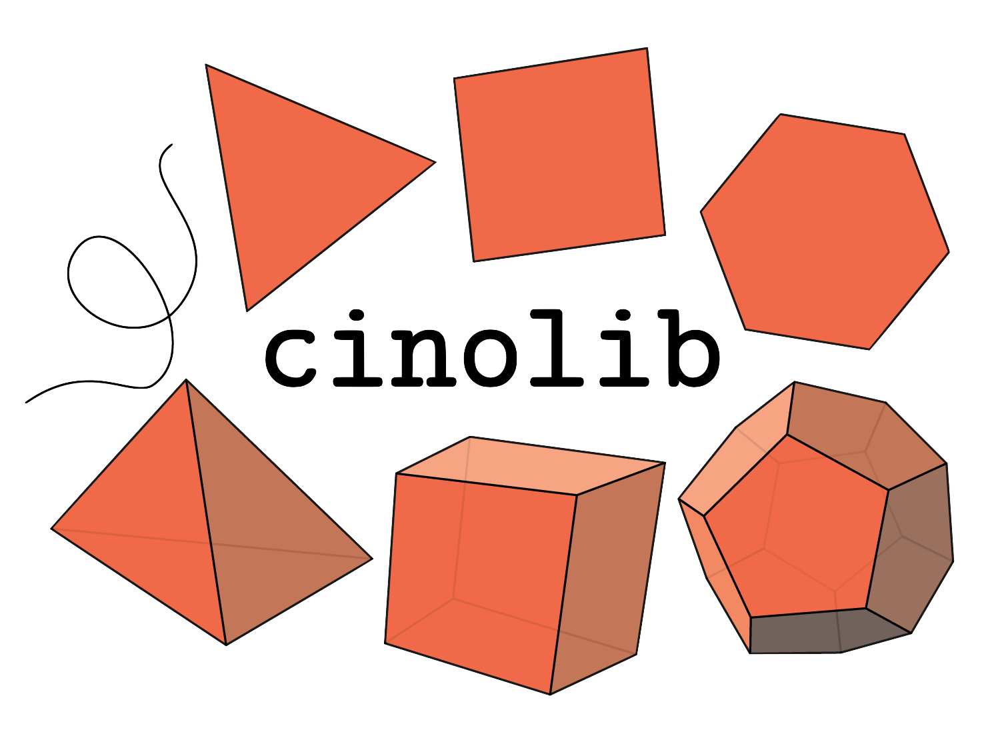
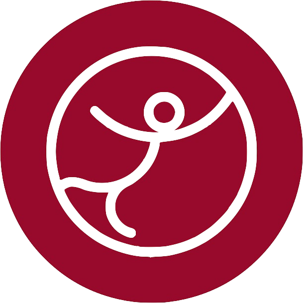

About Me
I am a PhD Student in Computer Science at the University of Cagliari, I am part of the research group CG3HCI.
During my studies I developed an interest in Computer Graphics (main focus of my PhD and both my thesis) and Human-Computer Interaction. My research is now focusing on Volume Mapping algorithms and techniques.
In my time at the university I also had the opportunity to explore other fields such as Computer Vision and Deep Learning, although they are not my main focus.
Email: federico.meloni3@unica.it
Profile: CG3HCI Lab. ~ University ~ CV.pdf
Office: Palazzo delle Scienze, via Ospedale 72, Cagliari, Italy
Publications
Here are some of my recent publications:
- To What Extent Are Existing Volume Mapping Algorithms Practically Useful?
-
AR TutorialKit: an Augmented Reality Toolkit to Create Tutorials
AR TutorialKit: an Augmented Reality Toolkit to Create Tutorials
Contributions on Open Source Community
Here are some of the open source projects I have contributed to:
-
Cinolib
CinolibA generic programming header only C++ library for processing polygonal and polyhedral meshes[GitHub]
-
VOLMAP
 VOLMAPA large-scale benchmark aimed to support ongoing research in volume mapping algorithms.
VOLMAPA large-scale benchmark aimed to support ongoing research in volume mapping algorithms.
VOLMAP also comprises tools to process this data and analyze the resulting maps.[Website] -
Graphics Replicability Stamp Initiative
Graphics Replicability Stamp InitiativeAn additional recognition for authors who are willing to go one step further, and in addition to publishing the paper, provide a complete open-source implementation.[Website]
Education
Here is a summary of my academic journey:
-
PhD Student in Computer Science🏛️ University of Cagliari, Italy🛠️ Currently working on Volume Maps⏳ October 2023 – present
-
 Visiting PhD Student🏛️ University of Technology Sydney, Australia📅 June 2025 - December 2025
Visiting PhD Student🏛️ University of Technology Sydney, Australia📅 June 2025 - December 2025
-
-
MSc Computer Science🏛️ University of Cagliari, Italy📅 October 2020 – September 2023
-
BSc Computer Science🏛️ University of Cagliari, Italy📅 October 2017 – September 2020
Experiences
Here are some of my professional and teaching experiences:
-
Research Fellow👨🏻💻 Project "RAPPRESENTAZIONE DI DATI AMBIENTALI INDOOR E OUTDOOR TRAMITE TECNICHE DI COMPUTER GRAPHICS E INFORMATION VISUALIZATION" within the TDM project📅 March 2020 - August 2020🏛️ CG3HCI Lab., University of Cagliari, Italy
-
Teaching Assistant - Programming 1👨🏻💻 Imperative procedural programming and the C language (lessons and exercises)🏛️ Bachelor Degree in Computer Science, University of Cagliari, Italy📅 A.Y. 2022-23, 2023-24, 2024-25
-
Teaching Assistant - VideoGame Design👨🏻💻 Basic concepts of videogame design and development with Unity Engine (lessons and exercises)🏛️ Bachelor Degree in Computer Science, University of Cagliari, Italy📅 A.Y. 2022-23
-
Educator in High Schools for the Coding Girls and Ital-IA Lab. projects👨🏻💻 Design of application prototupes, HCI concepts, introduction to AI and generative AI🏛️ Various High Schools in Cagliari - on behalf of Fondazione Mondo Digitale📅 A.Y. 2022-23, 2023-24, 2024-25